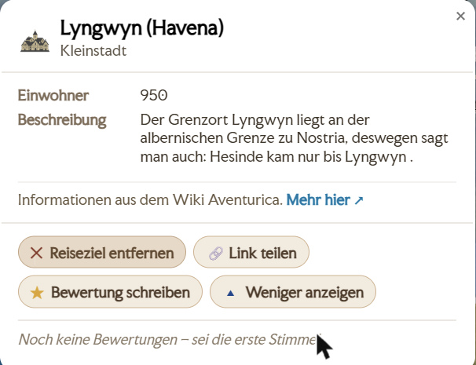

Editor-Handbuch
Willkommen im Editor-Team von Avesmaps. Diese Seite erklärt Schritt für Schritt, wie und wo du was machst.
A. Grundlagen & erste Schritte
Als Editor pflegst du die Karte von Aventurien: Orte, Wege, Flüsse, Regionen, politische Grenzen – und ihre Verknüpfung mit dem Wiki Aventurica. Alles, was du speicherst, geht sofort live.
Die goldenen Regeln
- Das Wiki Aventurica ist unsere Datengrundlage. Im Zweifel richten wir die Karte nach dem Wiki aus.
- Kleine, sorgfältige Schritte. Lieber eine Sache sauber ändern und speichern als viele auf einmal.
- Im Zweifel fragen statt raten (Kontakt siehe Abschnitt H).
- Fremde Arbeit stehen lassen. Lösche oder überschreibe nichts, was du nicht selbst angelegt hast, ohne Rücksprache.
Zugang bekommen
Dein Konto richtet der Betreiber persönlich für dich ein – eine Selbst-Registrierung gibt es nicht. Benutzername und Passwort bekommst du direkt von ihm.
Anmelden
- Öffne avesmaps.de/edit/ im Browser.
- Gib Benutzername und Passwort ein und klick auf „Anmelden". (Es braucht die Rolle editor oder admin.)
- Danach siehst du oben deinen Namen und deine Rolle sowie den Button „Abmelden"; darunter läuft die Karte im Bearbeiten-Modus.
Browser-Tipp: Arbeite mit einem Browser ohne aggressive Werbe-/Skriptblocker. Viele Adblocker (z. B. in Vivaldi) bremsen den Editor spürbar aus.
Orientierung
Im Bearbeiten-Modus hast du drei zentrale Werkzeuge:
- Die Karte selbst – hier klickst und ziehst du an den Features (Abschnitt B). Der Haupteinstieg dafür ist das Rechtsklick-Menü.
- Das „Editor"-Panel – öffnet sich über den Button „Editor". Es hat vier Reiter: Meldungen, Änderungen, WikiSync und Status.
- Das Rechtsklick-Menü – praktisch alle Bearbeitungen starten hier: Rechtsklick auf die Karte (Neues anlegen) oder auf ein Feature bzw. Gebiet („Bearbeiten", „Territoriumseditor öffnen" …, Abschnitt D). „Die Karte bearbeiten" und das Rechtsklick-Menü sind im Kern dasselbe.

Rollen & Rechte
Es gibt drei Rollen. Sie bestimmen, was du darfst:
- reviewer – darf Meldungen und Bewertungen prüfen.
- editor – darf zusätzlich die Karte bearbeiten (Orte, Wege, Territorien, Wiki-Verknüpfung …).
- admin – darf alles, inkl. Verwaltung (z. B. Konten anlegen).
B. Karten-Features bearbeiten
Orte, Wege, Kraftlinien, Labels und Gebiete bearbeitest du direkt auf der Karte. Alles, was du speicherst, geht sofort live und landet im Reiter „Änderungen" (Audit).
Neues anlegen
Rechtsklick auf die Karte → Gruppe „Hier hinzufügen". Dort wählst du:
- Neuer Ort (bzw. Neuer Ort aus dem Wiki) – eine Siedlung/ein Bauwerk.
- Neue Kreuzung – ein Knotenpunkt im Wegenetz.
- Neuer Weg – Straße, Fluss oder Pfad.
- Neues Label – ein Landschafts-/Regionenname auf der Karte.
- Neues Herrschaftsgebiet – ein politisches Gebiet (siehe Abschnitt D).

Orte / Siedlungen
Ein Klick auf die Siedlung öffnet ihr Popup. Dort kannst du sie verschieben (einfach auf der Karte ziehen) oder über „Bearbeiten" den Bearbeiten-Dialog öffnen:
- Identität: Ortsname und Ortsgröße (Dorf, Kleine Stadt, Stadt, Große Stadt, Metropole, Besondere Bauwerke/Stätten).
- Wiki-Siedlung: „Ändern" / „Entfernen"; das ↻ neben Name/Größe übernimmt den Wert aus der verbundenen Wiki-Siedlung.
- Wappen: „Übernehmen" (aus dem Wiki), „Eigenes hochladen" oder „Entfernen".
- Optionen: „Ort ist ein Nodix", „Ruine/zerstört".
- Mit „Speichern" bestätigen.
Wege / Flüsse / Straßen
Ein Klick auf den Weg öffnet sein Popup mit „Bearbeiten" und „Verlauf bearbeiten". „Bearbeiten" öffnet den Dialog:
- Wegname, „Auto-Name" und die Checkbox „Weg anzeigen" (blendet den Namen an der Linie ein).
- Wegtyp: Reichsstraße, Straße, Weg, Pfad, Gebirgspass, Wüstenpfad, Flussweg, Seeweg.
- Erlaubte Transportmittel (Karawane, Zu Fuß, Kutsche, Reiter, Flusssegler …) – steuert das Routing.
- Wiki-Weg: „Zuweisen" / „Entfernen" (siehe Abschnitt C). Der Bereich „Strömung" → Abschnitt G.
- Geometrie/Verlauf: nicht im Bearbeiten-Dialog, sondern über „Verlauf bearbeiten" (Popup bzw. Rechtsklick) – Knoten ziehen; Doppelklick auf die Linie fügt einen Knoten hinzu, Doppelklick auf einen Knoten löscht ihn.

Korrekte Wegzeichnung
Das Wegenetz ist ein Graph: Ein Weg verbindet nur das, was an seinen beiden Endpunkten liegt – was nur optisch auf der Linie liegt, zählt nicht. Daraus folgen fünf Regeln; die häufigsten Fehler entstehen alle, wenn man sie umgeht.
Selbst prüfen: Im Edit-Mode markieren die Häkchen „Unverbunden" (pinker Ring) und „Kreuzungen ≤ 2 Wege" (türkiser Ring) genau diese Fehler direkt auf der Karte.
Kraftlinien
- Name und „Name auf der Karte anzeigen".
- „Speichern" oder „Löschen".
Labels (Landschafts-/Regionennamen)
Ein Klick auf das Label bietet „Verschieben" (auf der Karte ziehen) und „Bearbeiten". Im Bearbeiten-Dialog:
- Text und Kategorie (Region, Fluss, Meer, Gebirge, Wald, Wüste, See, Insel …).
- Darstellung: Größe, Rotation, „Sichtbar ab/bis Zoom", Priorität.
- Wiki-Landschaft: „Zuweisen" / „Sync" / „Entfernen" (siehe Abschnitt C).
Speichern & nachvollziehen
Jede Änderung ist sofort live. Im Reiter „Änderungen" siehst du das Audit-Log: wer was wann geändert hat – und kannst Aktionen von dort auch rückgängig machen.
Vorsicht mit Strg+Z: Das macht die jeweils letzte Aktion rückgängig – und zwar global, also auch die anderer Editoren. Wenn du gezielt deine Änderung zurücknehmen willst, nutz lieber den Reiter „Änderungen".
C. Mit dem Wiki verknüpfen
Das ist der Kern der Editorarbeit: Jedes Objekt soll mit seiner Seite im Wiki Aventurica verbunden sein. Suche, Deep-Links, „Link teilen" und die Datenpflege hängen daran.
Siedlung ↔ Wiki
- Im Bearbeiten-Dialog der Siedlung, Bereich „Wiki-Siedlung", auf „Zuweisen" (bzw. „Ändern") klicken.
- Im Feld „Siedlung suchen …" die passende Wiki-Seite wählen.
- Mit dem ↻ neben Name/Größe die Werte aus dem Wiki übernehmen. „Entfernen" löst die Verbindung wieder.
Weg / Fluss / Straße ↔ Wiki
- Im Bearbeiten-Dialog des Wegs, Bereich „Wiki-Weg", auf „Zuweisen" klicken und unter „Fluss/Straße suchen …" wählen.
- Namensregel: Zuweisen/Ändern setzt den exakten Wiki-Namen für die ganze Namensgruppe; „Entfernen" wirkt weg-weit (räumt auch Geister-Segmente).
- Für lange Straßen mit vielen Segmenten gibt es ein Bulk-Verfahren → Abschnitt G.
Label / Landschaft ↔ Wiki
Im Bearbeiten-Dialog des Labels, Bereich „Wiki-Landschaft": „Zuweisen" / „Sync" / „Entfernen", Suche „Region/Landschaft suchen …".
„Link teilen" & Suche
- „Link teilen" in den Popups/Infoboxen von Orten, Wegen und Gebieten kopiert bevorzugt den Wiki-Link (Fallback: Karten-Deep-Link).
- Spotlight-Suche: Rechtsklick → „Suchen". Achtung: Wege sind nur auffindbar, wenn sie wiki-verlinkt sind.

D. Herrschaftsgebiete (Territoriumseditor)
Politische Gebiete (Reiche, Grafschaften, Baronien) haben eine eigene Hierarchie und einen eigenen Editor. Sie liegen als Flächen über der Karte.
Öffnen
- Rechtsklick auf ein Gebiet → „Territoriumseditor öffnen" (Eigenschaften & Hierarchie).
- Rechtsklick → „Grenzen bearbeiten" für die reine Geometrie.
- Weitere Rechtsklick-Aktionen: Verschieben, Gebiet zerschneiden, Mit anderem vereinigen, Von anderem ausschneiden, Neues Gebiet herauslösen, Löschen, Infobox anzeigen.

Eigenschaften & Hierarchie
- Wiki-Referenz setzen/ändern (Button „Wiki-Referenz ändern").
- Parent/Hierarchie: den Baum durchsuchen und das Gebiet zuordnen (per Ziehen). „Zuweisung aufheben" löst die Zuordnung.
- Name und Kurzname (der Kurzname wird auf der Karte bevorzugt gezeigt).
Wichtige Konzepte
- Hierarchie: Reich → Grafschaft → Baronie (über die Wiki-Zugehörigkeit).
- Zoom-Bänder („Sichtbar ab Zoom"): ab welcher Zoomstufe ein Gebiet erscheint.
- Hauptstädte: je Gebiet markiert.
- Gültigkeit (BF-Jahre): von/bis in „Bosparans Fall";
9999= bis heute offen. - Abgeleitete Außengrenze: bei reinen Container-Gebieten automatisch aus den Kindern berechnet.
- Umstrittene Gebiete: Mehrfach-Ansprüche werden als Schraffur dargestellt.

E. WikiSync
WikiSync gleicht die Karte mit dem Wiki Aventurica ab. Du findest es im Editor-Panel im Reiter „WikiSync".
- „📥 Dump holen" – lädt den aktuellen Wiki-Dump und liest ihn in eine Sandbox ein (schreibt noch nichts Scharfes).
- Art wählen über die Reiter: Siedlungen, Territorien, Regionen, Wege.
- „🚨 Syncen" – übernimmt die Objekte dieser Art aus dem Dump in die Staging-Tabellen. (Bei Territorien heißt der Knopf „WikiSync & Editor".)
- Konfliktlösung: Unter „Konfliktlösung" liegen die Fälle in Offen / Zurückgestellt / Archiviert. Einen Fall öffnest du im Dialog „WikiSync-Fall lösen" mit den Vorlagen „Wiki-Einstellung" und „Avesmap Einstellung".
Faustregeln: den Dump bevorzugen (keine HTML-Crawls) und WikiSync nicht in Schleife auslösen – das schont den Server.

F. Meldungen & Community
Drei Reiter im Editor-Panel decken die Community-Arbeit ab.
Reiter „Meldungen"
- Community Meldungen – Hinweise von Nutzern zu Orten abarbeiten.
- Bewertungen – Community-Bewertungen sichten.
- Mails – das Postfach (Empfangen / Gesendet).
Reiter „Änderungen"
Das Audit-Log aller Editor-Änderungen: wer, was und wann. Deine erste Anlaufstelle, um eine Änderung nachzuvollziehen oder rückgängig zu machen.
Reiter „Status"
- Editoren – wer gerade angemeldet/aktiv ist, plus Aktivitätszahlen.
- Besucher – ein anonymes Besucher-Dashboard.
G. Spezial-Workflows
Fortgeschrittene Abläufe. Du brauchst sie nicht täglich – aber gut zu wissen, dass es sie gibt.
Flussrichtung
Im Bearbeiten-Dialog des Wegs, Bereich „Strömung":
- Aktueller Stand: „Richtung: unbekannt / …".
- „Richtung festlegen" setzt die Fließrichtung; „Richtung vervollständigen" ergänzt fehlende Teilstücke ankerbewusst.
- „Strömungsfaktor (flussaufwärts ×)" mit „Übernehmen" steuert den Zeitaufschlag gegen die Strömung.
Weg-Namen-Labels
Über die Checkbox „Weg anzeigen" und „Auto-Name" im Bearbeiten-Dialog des Wegs steuerst du, ob und wie ein Weg-/Flussname entlang der Linie erscheint.
Straßen-Wiki-Zuweisung (Bulk)
Lange Straßen/Flüsse bestehen aus vielen Segmenten. Man hängt alle an einen Wiki-Weg und prüft die Kette gegen den Wiki-Verlauf (Ortsfolge). Das ist ein eigenes, sorgfältiges Verfahren – im Zweifel vorher abstimmen.
Verlauf-Sync
Der Wiki-Verlauf (die Ortsfolge einer Straße im Wiki) wird zurück in die Segment-Zuordnung gespiegelt, damit Karte und Wiki übereinstimmen.
H. Regeln, Etikette & Fallstricke
Regeln
- Das Wiki Aventurica ist unsere Datengrundlage. Im Zweifel richten wir uns nach dem Wiki.
- Kleine, sorgfältige Schritte – und nach dem Speichern kurz prüfen.
- Fremde Arbeit nicht löschen/überschreiben ohne Rücksprache.
- Nicht blind massenhaft ändern.
Fallstricke
- Alles geht sofort live – es gibt keinen Entwurfsmodus. Im Reiter „Änderungen" bleibt aber alles nachvollziehbar.
- Teure Aktionen nicht in Schleife auslösen (vor allem WikiSync und die politische Ebene) – das schont den Server.
Hilfe & Kontakt
Bei Fragen wende dich an unseren Discord – dort bekommst du am schnellsten Hilfe vom Team.